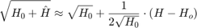
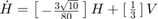
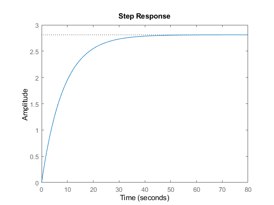
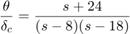
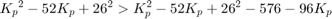
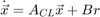

Reguleringsteknikk eksamen
Contents
- Task 1
- a) State-space representation
- State Space Representation
- b) simulink implementations
- c) PID design
- c/d) Applying the control to the non-linear and linearized plants in simulink
- Task 2
- a) poles and zeros
- b) Step response
- c) Stability
- d) P-control equivalent transfer function
- e) Kp-stable values
- f/g/h)
- i)
- Task 3
- a/b) System transfer functions
- c) Plant step response
- d) poles
- f) new A matrix
- g) step responses
Task 1
a) State-space representation
Differential equation describing the tank water level:
This ode is non-linear in  . However, we can approximate this by a first order taylor expansion/linearization in a neighbourhood around the stationary point :
. However, we can approximate this by a first order taylor expansion/linearization in a neighbourhood around the stationary point :

With this linearization we arrive at the linear ODE:
State Space Representation
We can find the state space representation of this system (ignoring the non-homogeneous part):
Alternatively, with our constants and linearization point:

Our state space consists of a one-dimensional state vector H and a one-dimensional control vector V
b) simulink implementations
Open-loop non-linear system:

Open-loop linear system:

c) PID design
Now we develop a complete PID controller for our plant using the transfer function of the linearized model.
close; s = tf('s'); A = 24; b = 8; a = 18; %water tank parameters tf_linear = (b/A)/(s+1/(2*sqrt(10))*(a/A)); %defining transfer function as given in the task step(tf_linear);
Now we tune all the gains to achieve the desired response
Kp = 15; Ki = 5; Kd = 1; H = tf_linear; %plant transfer function C = Kp + Ki/s + Kd*s; %PID transfer function CH = C*H; %closed loop transfer function closed_tf = CH/(CH+1); step(closed_tf); info = stepinfo(closed_tf); overshoot = info.Overshoot; rise_time = info.RiseTime; settling_time = info.SettlingTime; % Display results fprintf('Overshoot: %.2f%%\n', overshoot); fprintf('Rise Time: %.2f s\n', rise_time); fprintf('Settling Time: %.2f s\n', settling_time); grid on;
Overshoot: 2.95% Rise Time: 0.51 s Settling Time: 3.76 s
c/d) Applying the control to the non-linear and linearized plants in simulink
With our conservative gains [Kp, Ki, Kd] = [15, 5, 1] We achieved a nice response.
Here I plot the response for a setpoint of 10 an an initial tank level of 9, for both the non-linear and linear systems.


The response of the linear system here is not just a scaled version of the closed_loop unit step response, since the setpoint and initial conditions arent just scaled versions of the unit step (theres a translation in the setpoint). If we instead plotted the response of a setpoint of 10 and an initial condition of 0, the response of the linearized system would be identical to a scaled version of the unit step response.
% We also see again that the linear approximation starts out good, but diverges from the true state of the system as we get further away from the linearization point.
Task 2
a) poles and zeros
the transfer function, with canard deflection as input and pitch altitude as output, is given as:

This system is clearly unstable, as both poles are positive real numbers (8 and 18). We can verify this by using pzplot and looking at the poles:
s = tf('s');
sys = (s+24)/((s-8)*(s-18));
pzplot(sys);

b) Step response
close; step(sys);
c) Stability
The output of our system blows up to infinity, so it is clearly unstable. The open-loop system does not satisfy BIBO, and requires closed loop control to become stable.
d) P-control equivalent transfer function
We add a proportional control and find an equivalent transfer function for the whole system. I use the simulink block diagram to help find the expression for the new system:

I insert the plant model to obtain the full closed loop transfer function:
Finally, simplifying the fraction gives:
e) Kp-stable values
We can show this mathematically by finding the Kp values for which all our poles are in the negative half-plane (negative real part). To do this we look we analyze the denominator of our transfer function with the quadratic formula.
equation:
We need the real parts of the roots to both be negative. The roots are found by the quadratic equation:
The strictly real part is . If the discriminant is negative or zero, then the real part is just , and our system is obviously stable for all  . If the discriminant is positive however, the root will be strictly real, and we need to verify that they are still negative, by checking that
. If the discriminant is positive however, the root will be strictly real, and we need to verify that they are still negative, by checking that

This inequality will obviously also hold for . We have now shown that all the roots have negative real parts for all , so that our system is stable.
f/g/h)
For the proportional controller i chose Kp = 147 (see full assignment in attachments):
Kp = 147; closed_loop = (Kp*s+Kp*24)/(s^2+(Kp-26)*s+(144+24*Kp)); % We have verified that the poles of our new system are all negative real part. This means the system stable, and we can verify this % by viewing the step response of the closed loop system: step(closed_loop); close; [y,t]=step(closed_loop); %save the output values to check steady state SS_error = abs(1-y(end)) %verifying that the new system is stable isstable(closed_loop) close; pzplot(closed_loop)
SS_error =
0.0389
ans =
logical
1
Thus we have verified that our control system is stable and reaches a steady state error of 3.89%, with a steady state value of
i)
The new system is stable, as shown by the poles and step response.
Task 3
a/b) System transfer functions
I round off the entries in A to make my life a bit easier.
A = [0 0 1 0;
0 0 0 1;
0 181 0 0;
0 782 0 0;];
B = [0;
0;
921;
2921;];
C = [1 0 0 0;
0 1 0 0];
D = [0;
0];
sys_ss = ss(A, B, C, D);
s = tf('s');
The easy way:
H_matlab = tf(sys_ss);
Manually:
I = eye(4); % 4x4 identity
H_manual = C*((I*s-A)\B);
We now have the transfer function for our plant, one computed with tf() and one manually.
H_matlab
H_matlab =
From input to output...
921 s^2 + 1.636e-12 s - 1.915e05
1: --------------------------------
s^4 - 1.066e-14 s^3 - 782 s^2
2921
2: -----------------------
s^2 - 1.066e-14 s - 782
Continuous-time transfer function.
H_manual % Before I move on, i remove the extremely small coefficients in the transfer functions, as they have virtually no impact) % I verified this by checking that the poles didnt change. close; H_theta = (921*s^2 - 191500)/(s^4 - 782*s^2); %theta transfer function H_alpha = (2921)/(s^2-782); %alpha transfer function H = [H_theta;H_alpha];
H_manual =
From input to output...
921 s^2 - 1.243e-10 s - 1.915e05
1: ------------------------------------------------------
s^4 - 1.495e-14 s^3 - 782 s^2 + 6.066e-13 s - 1.97e-29
2921
2: ---------
s^2 - 782
Continuous-time transfer function.
We end up with the following plant transfer functions for and :
c) Plant step response
close; subplot(2,1,1); step(H_theta, 'b') title('Theta response') subplot(2,1,2); step(H_alpha, 'r') title('Alpha response')
d) poles
Checking the poles with pzplot() and pole():
close; pzplot(H); pole(sys_ss)
ans =
0
0
27.9643
-27.9643
Our system has four poles:
The system has poles in the right half-plane, and is therefore unstable.
close; %%e) Feedback gain vector % We need to find a gain vector $\vec{k} = [k_1, k_2, k_3, k_4]$ Which brings the poles/eigenvalues to -10, for our system:
We can do this by using the acker() commands, specifying our desired pole locations
P = [-10, -10, -10, -10]; K = acker(A, B, P) A_CL = A-B*K;
K = -0.0522 0.4896 -0.0209 0.0203
f) new A matrix
We have found a K matrix/vector such that the poles of our new system is stable (this requires full state estimation). We did this by implicitly defining our control input as:
Where is the reference/input. In this way, our new system becomes:
We now arrive at a new state space representation of our system, by defining our modified A-matrix :

A_CL
A_CL =
0 0 1.0000 0
0 0 0 1.0000
48.0887 -269.9112 19.2355 -18.6771
152.5159 -648.0887 61.0064 -59.2355
g) step responses
new_sys = ss(A_CL, B, C, D);
close; step(new_sys);